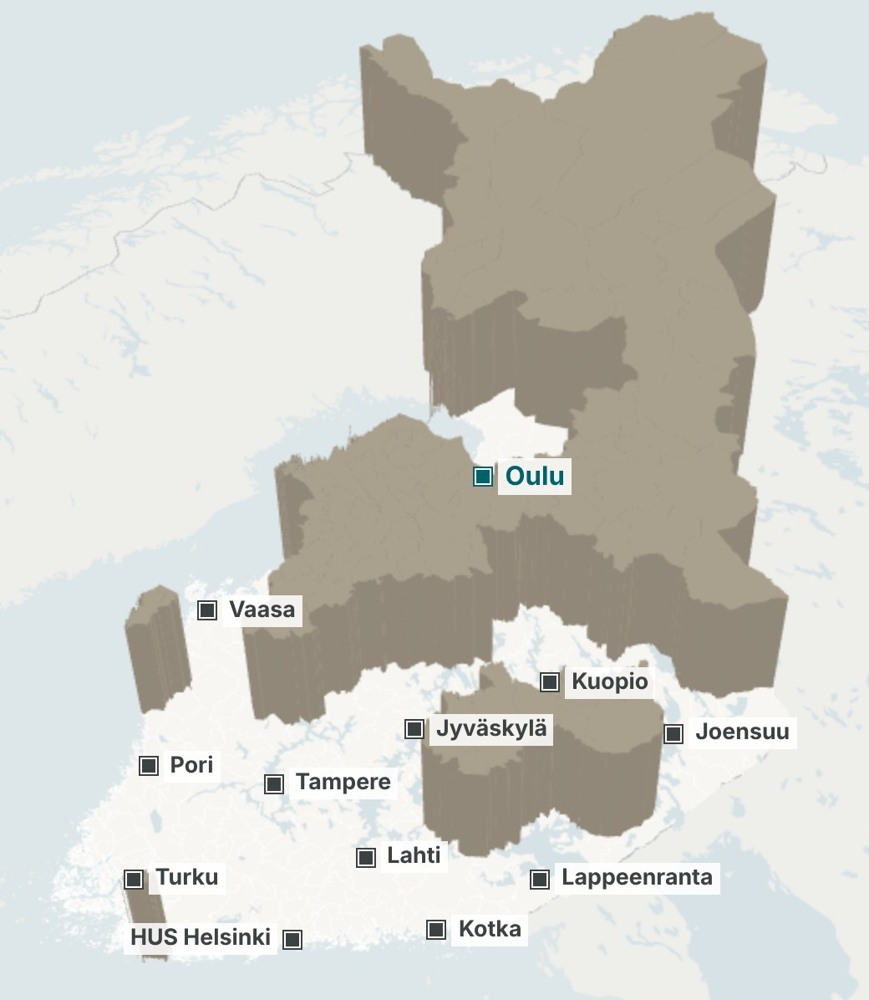
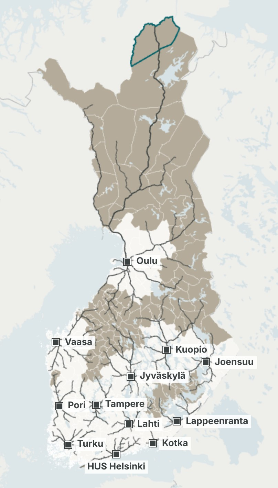
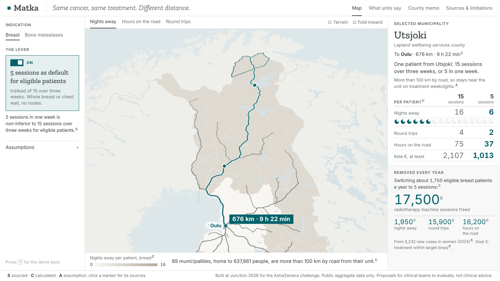
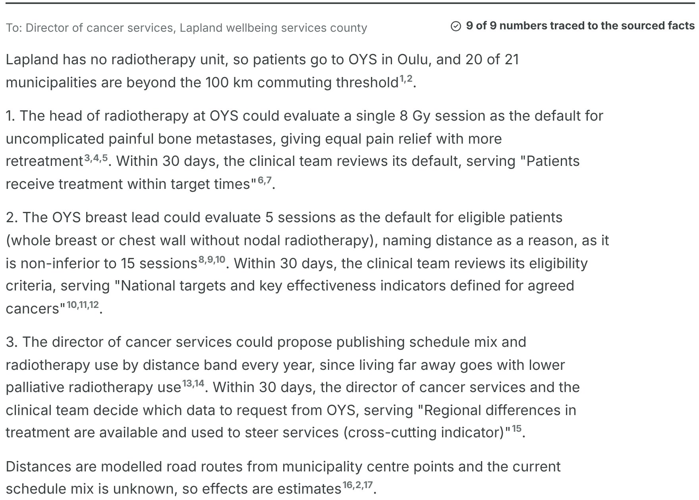

12S
public radiotherapy units serve mainland Finland. Lapland has none: its patients are treated in Oulu.
Radiotherapy travel burden in Finland · National Cancer Strategy, Goal 3
Same cancer, same treatment. Different distance.
Matka shows what a radiotherapy course costs patients in every Finnish municipality, in trips, nights away and hours on the road, and how much evidence-based shorter schedules would remove.
The ask
A 12-month pilot at OYS in Oulu: 5 sessions as the default for eligible breast patients, a single 8 Gy session for uncomplicated painful bone metastases, and the schedule mix published every year.


public radiotherapy units serve mainland Finland. Lapland has none: its patients are treated in Oulu.
from Utsjoki to OYS in Oulu, one way: 9 h 22 min by road.
The national roadmap: palliative radiotherapy is used less by patients living more than 100 km from a unit (p. 13).
Meta-analysis: living 50 km or more from a centre goes with 16% lower odds of receiving palliative radiotherapy.
Kela travel reimbursement per resident in 2025: Kainuu, the highest, against Helsinki, the lowest. All reimbursed travel, not only radiotherapy.
Radiotherapy after breast surgery
Common schedule today: 15 sessions over 3 weeksS
Radiotherapy for painful bone metastases
Multi-session course: 5 sessionsA
Expected values, retreatment included. One moon per night away, as in the app.
How Matka counts a courseA
Within 100 km by road: drive in for every session. Beyond: stay near the unit on treatment weeknights, home at weekends. Plus 1 planning visit.
Radiotherapy patients often attend daily for several weeksS. Every session also takes a treatment-machine slot, and Goal 3 tracks whether patients receive treatment within target timesS.
Breast, after surgery
patients randomised in FAST-Forward
26 Gy in 5 sessions over 1 week is non-inferior to 40 Gy in 15 over 3 weeks.S
At 10 years, a similar level of cancer control: breast recurrence 2.1% vs 3.6%; late moderate or marked breast effects 14.4% vs 13.1%.S
Eligible: whole breast or chest wall without nodal radiotherapy. 15 sessions stays standard when nodes are treated.S
Painful bone metastases
pain response, single vs multiple sessions, 29 randomised trials
Retreatment 20% vs 8%: the cost of a single session. Matka counts it.S
Guidelines name a single 8 Gy session.S
Today's practice in Finland
units publishes which schedule it uses
No unit page found states 5 breast sessions as standard, a session count for painful bone metastases, or distance as a reason.C
Turku University Hospital, 2005–2013: 7% of courses in the last year of life were single-session. One centre, all indications.S
No survival claims are made for the shorter schedules. They apply to eligible patients only; schedule choice stays a clinical decision.

1 2 3 4 5Three more tabs: What units say (unit pages read by AI) · County memo (one for each of 22 areas) · Sources & limitations (68 sources, 15 limitations). Runs offline: no request leaves the page.
Every year, nationally, breastC
About 1,750 eligible breast patients a year are still on 15 sessions. Moving them to 5 removes:
Assumptions, each a slider in the appA: 70% of new breast cancers get radiotherapy · 60% of them are eligible for 5 sessions · 20% of those already get 5.
Freed machine sessions serve Goal 3: patients receive treatment within target times.S
One patient from Utsjoki, breastC
| 15 sessions | 5 sessions | |
|---|---|---|
| Nights away | 16 | 6 |
| Round trips | 4 | 2 |
| Hours on the road | 75 | 37 |
| Kela €, at least | 2,107 | 1,013 |
Painful bone metastases, single 8 GyC
Beyond 100 km: 6.2 → 2.4 nights away per course. Within 100 km: 6.2 → 2.4 round trips.
Retreatment is included, so far patients make about the same number of trips (2.2 → 2.4). Per patient only: no national count of bone courses is published.
The other 10 of 22 areas have no municipality beyond 100 km, so no nights away to remove.
of all nights removed fall in the 56 municipalities routed to OYS in Oulu, home to 9% of the eligible patients.
Lapland has no unit: 20 of its 21 municipalities are beyond 100 km, and the switch removes 9.8 nights per eligible patient.C
Near a unit the switch still matters: a patient within 100 km makes 16 → 6 round trips.C
| Change | Owner | First step, within 30 days | Goal 3 indicator it serves |
|---|---|---|---|
1 5 sessions as the default for eligible breast patients (whole breast or chest wall, no nodal radiotherapy), with distance named as a reason to choose it.S |
Breast radiotherapy lead | Clinical team reviews its eligibility criteria and last year's schedule mix. | Patients receive treatment within target timesS |
2 A single 8 Gy session as the default for uncomplicated painful bone metastases, with retreatment tracked.S |
Head of radiotherapy | Clinical team agrees which bone cases count as uncomplicated and reviews retreatment rates. | National targets and effectiveness indicators for agreed cancersS |
3 Publish the schedule mix, and radiotherapy use by distance band, every year.S |
Director of cancer services, with the unit's quality manager | Agree the distance bands and the data to extract. | Regional differences in treatment are available and used to steer servicesS |
Why all three: the evidence exists, the burden is measurable, and change 3 makes changes 1 and 2 checkable. Today Matka found a published schedule for 1 of 12 units.
Proposals for clinical teams to evaluate. Schedule choice stays a clinical decision for each patient. Each county's memo in the app carries these proposals with its own numbers.
OYS catchment, as modelledC
56 municipalities, 41 beyond 100 km, home to 607,715 people. Lapland has no unit of its own, and Utsjoki, 676 km away, is the longest drive in Matka's routing.
About 157 eligible breast patients a year on 15 sessions. If all switch, every year:
machine sessions freed
Measured at baseline and month 12
Share of eligible breast patients on 5 sessions · share of uncomplicated bone metastases on a single 8 Gy session · retreatment rate · nights away and round trips per course, by distance band · machine sessions freed · time to start of radiotherapy
Read
Compute
Write
68 sources, each with a short verbatim quote. Every number in this deck is checked against the repo data by a script, like the memos.

Machine sessions freed a year, across each assumption's range in the appC
If half the eligible patients already get 5 sessions, the switch frees 10,900; if all do, nothing. That is why change 3 asks units to publish the mix.
Commuting threshold 30–300 kmA: sessions freed unchanged; nights away removed 7,860 to 120.
Also limits the numbers
An introduction to the OYS head of radiotherapy and Lapland's director of cancer services. Lapland's memo is already written, every number traced.
Last year's aggregate schedule mix and retreatment rate from OYS. It replaces the "already on 5 sessions" assumption and sets the pilot baseline.
We rerun Matka with those numbers and update the memos for the counties OYS serves. The same memo already exists for all 22 areas.
We can’t move the hospital. The schedule can.
Check it yourself in five minutes
Open matka-hack-europe.vercel.app. Press 2 to fly the road from Utsjoki to Oulu; 3 turns the breast lever on. Click any S, C or A marker for its source and quote. 7 writes Lapland's memo. Code and data: github.com/reubxn/makta.
Per patient, for a course of n sessions
Every year, breast
Reproduce
node deck/compute_numbers.mjs → deck/numbers.json (runs src/model/metrics.ts on public/data)
node deck/build.mjs && node deck/render.mjs → deck/matka.pdf, deck/slides/*.png, number check
| Parameter | Default | Kind | Sources |
|---|---|---|---|
| Commuting threshold | 100 km | A | S21 |
| Planning visits before treatment | 1 trip | A | – |
| Breast: long schedule | 15 sessions | S | S9, S14 |
| Breast: short schedule | 5 sessions | S | S9, S15 |
| Breast: share treated with radiotherapy | 70% | A | – |
| Breast: share eligible for 5 sessions | 60% | A | S15, S14 |
| Breast: share already on 5 sessions | 20% | A | – |
| Bone: multi-session course | 5 sessions | A | S62 |
| Bone: single session | 1 session | S | S62, S31, S32 |
| Bone: retreatment after single session | 20% | S | S30 |
| Bone: retreatment after multi-session course | 8% | S | S30 |
| Bone: share already single session | 7% | A | S16 |
| Kela own-car rate | 0.33 €/km | S | S6 |
| Kela overnight allowance | 20.18 € | S | S7 |